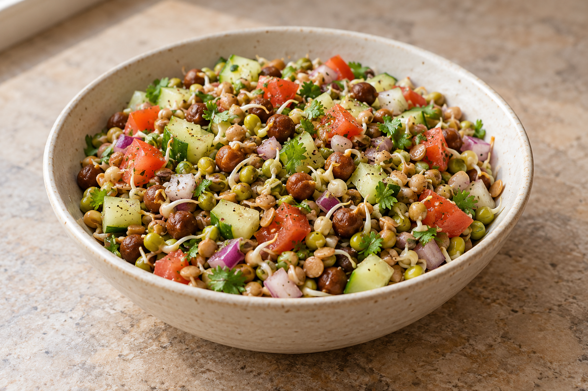
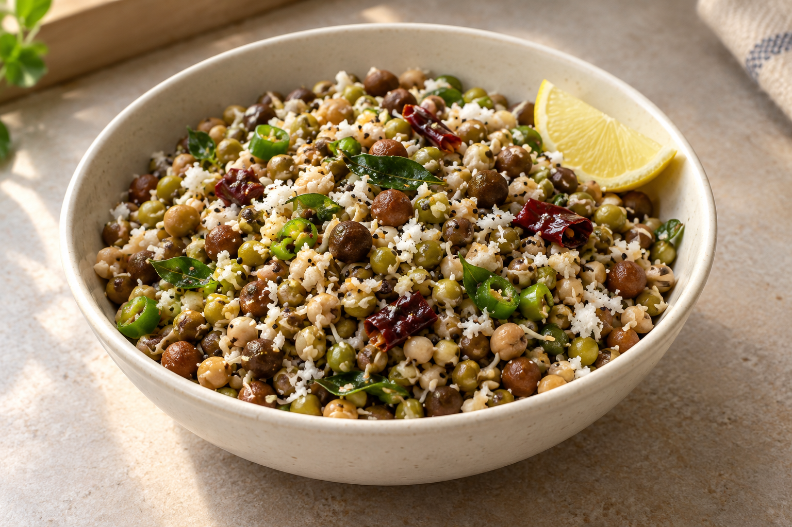
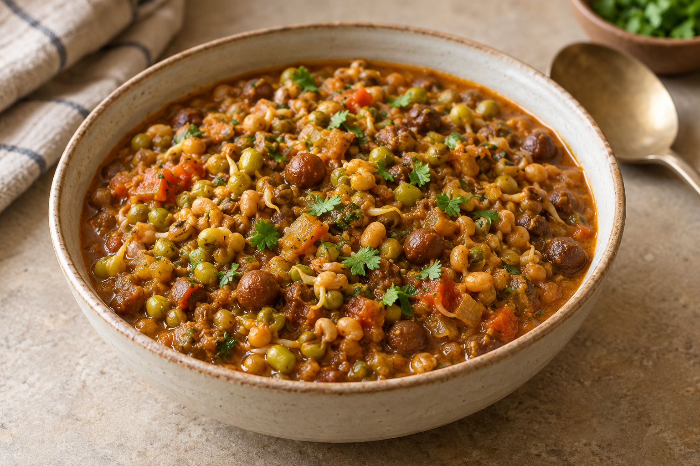
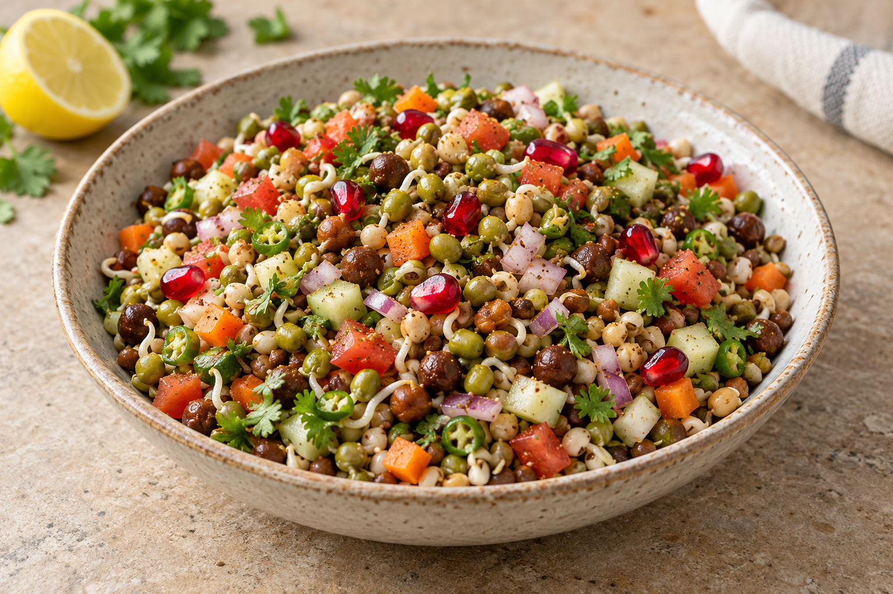
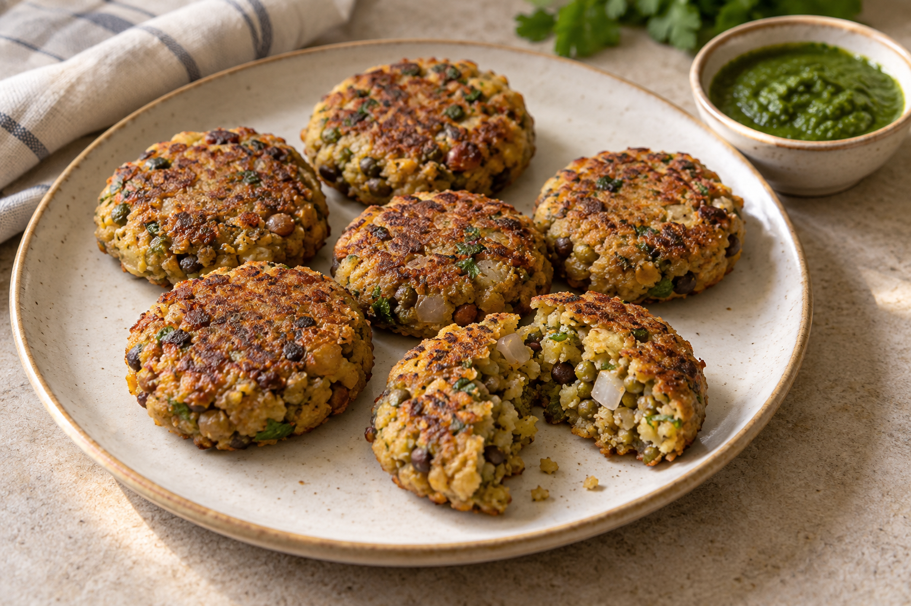

Recipe 01 · 15 minutes
Mixed Sprouts Salad

Ingredients
- 2 cups mixed sprouts
- 1 small cucumber, chopped
- 1 medium tomato, chopped
- ½ small red onion, finely chopped
- 1 green chilli, finely chopped (optional)
- 2 tbsp coriander leaves, chopped
- Juice of ½ lemon
- ½ tsp roasted cumin powder
- Salt and black pepper to taste
Method
- Steam the mixed sprouts for 8–10 minutes, until tender but still firm. Cool completely.
- Add the sprouts, cucumber, tomato, onion, chilli and coriander to a bowl.
- Season with cumin, salt and pepper.
- Add lemon juice, toss gently and serve immediately.
Recipe 02 · 20 minutes
Mixed Sprouts Sundal

Ingredients
- 2 cups mixed sprouts
- 1 tbsp coconut oil
- 1 tsp mustard seeds
- ½ tsp urad dal
- 1 dried red chilli, broken
- 1 green chilli, sliced
- 8–10 curry leaves
- A pinch of asafoetida
- ¼ tsp turmeric
- ¼ cup grated fresh coconut
- Salt and lemon juice to taste
Method
- Steam the mixed sprouts for 8–10 minutes, keeping them slightly firm.
- Heat oil and let the mustard seeds splutter. Add urad dal, red chilli, green chilli and curry leaves.
- Add asafoetida and turmeric, then tip in the steamed sprouts and salt.
- Toss for 3–4 minutes. Switch off the heat and mix in coconut and lemon juice.
Recipe 03 · 30 minutes
Mixed Sprouts Masala Curry

Ingredients
- 2 cups mixed sprouts
- 1 medium onion, finely chopped
- 2 medium tomatoes, chopped
- 1 tsp ginger-garlic paste
- 1 tbsp oil
- ½ tsp cumin seeds
- ½ tsp turmeric
- 1 tsp coriander powder
- ½ tsp red chilli powder
- ½ tsp garam masala
- Salt to taste
- Coriander leaves to finish
Method
- Steam the sprouts for 8–10 minutes and set aside.
- Heat oil, add cumin, then sauté the onion until golden. Add ginger-garlic paste.
- Add tomato, turmeric, coriander powder, chilli powder and salt. Cook until the masala thickens.
- Add sprouts and 1 cup water. Cover and simmer for 10–12 minutes.
- Stir in garam masala, garnish with coriander and serve hot.
Recipe 04 · 2 servings
Mixed Sprouts Chaat

Ingredients
- 2 cups steamed mixed sprouts, cooled
- ½ small onion, finely chopped
- 1 tomato, finely chopped
- ½ cucumber, finely chopped
- 1 small carrot, finely chopped
- 1 green chilli, finely chopped (optional)
- 2 tbsp coriander leaves
- 2 tbsp pomegranate seeds
- ½ tsp chaat masala
- ½ tsp roasted cumin powder
- Lemon juice, salt and pepper to taste
Method
- Combine the cooled sprouts, onion, tomato, cucumber, carrot, chilli and coriander.
- Add chaat masala, cumin, salt and black pepper.
- Squeeze in lemon juice and toss gently.
- Top with pomegranate seeds and serve straight away.
Recipe 05 · makes 8
Mixed Sprouts Cutlets

Ingredients
- 2 cups steamed mixed sprouts
- 1 medium potato, boiled and mashed
- ½ small onion, finely chopped
- 1 green chilli, finely chopped
- 1 tsp grated ginger
- 2 tbsp coriander leaves
- ½ tsp cumin powder
- ½ tsp garam masala
- ¼ tsp turmeric
- 3 tbsp rice flour or oat flour
- Salt to taste
- 2 tsp oil for shallow frying
Method
- Cool the steamed sprouts, drain well and pulse to a coarse mixture.
- Mix with potato, onion, chilli, ginger, coriander, spices, flour and salt.
- Shape into eight small flat cutlets. Chill for 10 minutes if the mixture feels soft.
- Lightly grease a tawa and cook over medium heat for 3–4 minutes on each side, until crisp and golden.
- Serve hot with mint-coriander chutney.